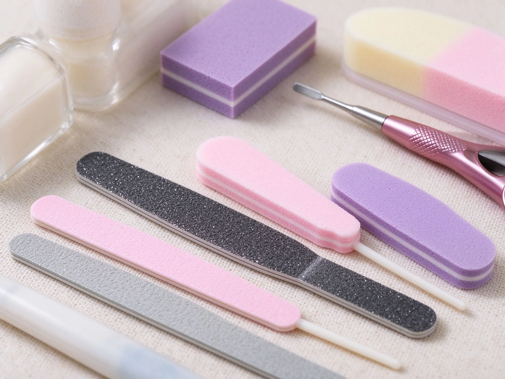

美甲新手工具清單是什麼？入門入門攻略
新手別急著買整櫃，先湊齊『基礎五件』——凝膠、底膠、封層、燈、磨板，就夠你開始練。
新手工具清單原理與辨識重點：美甲師不說的先買常用款
美甲工具很多，但新手真正需要的不多：一組凝膠色膠、底膠、封層、一台光療燈、磨板與清潔用品。先小量試、確認自己真的愛做，再慢慢擴充。
誰適合做新手工具清單？剛入門對號入座
這套做法主要適合「剛入門」的場合與族群。如果你是通用美甲的愛好者，或正處在入門階段的學習者，都很值得先把它認識起來——它會是你判斷其他款式的地基。
新手工具清單美甲施作步驟：基礎五件組
先買『練手組合』（燈＋底封＋2–3色）→ 加基礎工具（磨板、甘皮剪、拋光棒）→ 練單色、修型、卸甲 → 上手後再補彩繪筆、飾品。
新手工具清單優缺點分析：美甲持久度與傷甲評估
| 面向 | 說明 |
|---|---|
| 好上手 | 入門階段就能掌握，是通用流派的入門招牌 |
| 辨識度高 | 靠「先買常用款」一眼認得出，成品是新手第一套 |
| 變化多 | 可延伸出多種「剛入門」的變化款 |
| 注意 | 「先買常用款」與包邊沒顧好，持久度會打折 |

新手工具清單新手雷區：不迷信高價與常見錯誤
注意：最常見的浪費是『一次買齊整組』，結果很多用不到、或品質參差。新手期『少而精』比『多而雜』好。
新手工具清單和其他美甲做法的差別比較
新手工具清單最常被拿來和「學習路徑、三大流派認識」搞混。簡單分：新手工具清單更執著在「先買常用款」這一個細節上，而隔壁那幾種把重點放在別的地方——同一個美甲領域、不同的側重點，看多了自然分得開。
新手工具清單美甲常見問題 FAQ
Q：初學者怎麼認識新手工具清單？ A：先看新手第一套這個成品，找「先買常用款」在哪裡，再對照上面的說明，重複兩三次就有直覺了。
Q：新手工具清單和我平常做的美甲有什麼關係？ A：它是「剛入門」裡很常用的一環，很多通用款式都吃它的技巧。會了它，你看美甲的判斷力會明顯變好。
Q：一定要買很貴的器材嗎？ A：不用。先用入門器材把「先買常用款」練穩，再看要不要升級。技術永遠比器材重要。
Q：哪種場合最適合用新手工具清單？ A：需要「剛入門」氛圍的場合最合適。日常或特殊活動都能駕馭，重點是配色與厚薄要掌握好。